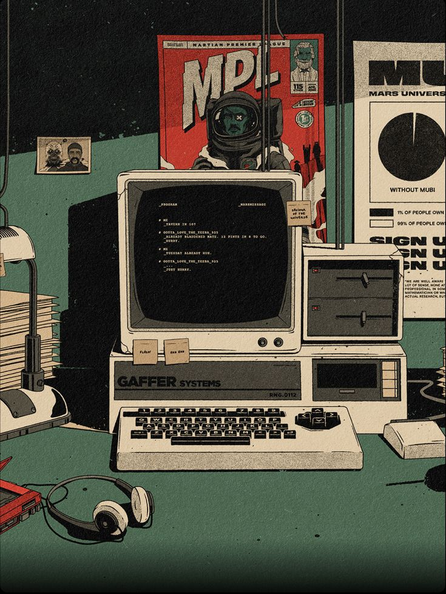

SmartHome Dashboard
Um painel interativo para monitoramento e controle de dispositivos IoT em residências inteligentes. O projeto simula sensores de temperatura, iluminação, e consumo de energia em tempo real. Ideal para praticar integração com APIs e interfaces responsivas.
AI Chatbot para Atendimento
Desenvolvimento de um chatbot com IA treinado para responder dúvidas frequentes de clientes. Utiliza processamento de linguagem natural (NLP) para melhorar a experiência do usuário. Inclui painel de análise com estatísticas de uso e desempenho.
Plataforma de Cursos Online com Videoaulas

Uma plataforma web para oferecer e consumir cursos com vídeos, quizzes e fóruns. Os usuários podem se cadastrar, assistir aulas e acompanhar seu progresso. O projeto envolve autenticação, banco de dados e upload de conteúdo.
App de Reconhecimento Facial com Python e JavaScript

Aplicativo web que utiliza a câmera do dispositivo para identificar rostos. O sistema compara os rostos com um banco de dados previamente treinado. Útil para aprender sobre visão computacional e integração front-end/back-end.
Simulador de Bolsa de Valores em Tempo Real
Um app que simula negociações na bolsa usando dados reais de mercado via API. Permite comprar e vender ações fictícias e acompanhar o portfólio. Excelente projeto para praticar requisições HTTP e gráficos dinâmicos.
Gerenciador de Tarefas com Drag and Drop
Sistema de organização de tarefas com suporte a múltiplas listas e movimentação por arrastar. Usuários podem marcar tarefas como concluídas e definir prazos. Foco em interações intuitivas e uso avançado de eventos DOM.